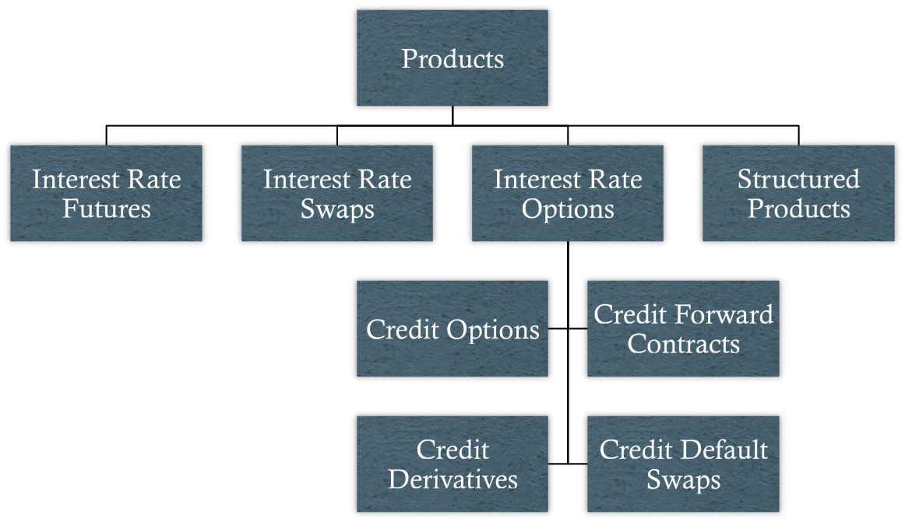

Definition: A contract involving the sale of securities coupled with an agreement to repurchase the same securities on a later date
Factors affecting the repo rate:
Quality of the collateral
Term of the repo
Delivery requirement
Availability of collateral
Prevailing interest rates in the economy
Seasonal factors
Derivatives-Enabled Strategies
Interest Rate Risk
Portfolio duration - the weighted-average of the durations of the individual securities composing a portfolio
Dollar duration - the duration impact of a one dollar investment in a security
(Di×Vi)/Vp
To maintain portfolio duration when exchanging one security for another, the dollar durations of the exchanged securities must match
New bond market value = DD0/DN×100
Other Risk Measures
Semivariance - measures dispersion of return outcomes below the target return
Computationally challenging
To the extent returns are symmetric, it containts no additional information as compared to variance
Shortfall risk - probability of not achieving some specified target return
Does not account for magnitude of losses in dollar terms
Value at risk (VaR) - estimate of the loss (in dollar terms) that is expected to be exceeded with a given level of probability over a specified time horizon
Does not indicate the magnitude of losses beyond exceedance point
Problems with Using Variance to Measure Bond Portfolio Risk
Number of estimated parameters increases dramatically as number of bonds under consideration increases
# of parameters = # of bonds × (× of bonds + 1)/2
Difficult to estimate variances and covariances based on historical data
Products Used in Derivatives-Enabled Strategies

Interest Rate Futures
Definition: A contract between a buyer and seller agreeing to the future delivery of an interest-bearing asset
Conversion factors
Cheapest-to-deliver (CTD)
Common strategies:
Duration management
Duration hedging
Duration Management
Definition: The process of maintaining a portfolio's duration at its target value
Portfolio target dollar duration (DD) = Current portfolio DD w/o futures + DD of futures contracts
DD of futures = DD per futures contract × # of contracts
Number of contracts needed to achieve portfolio target DD:
(DT-DI)PI/DD per futures contract, OR
[(DT-DI)PI/(DCTDPCTD)]×(DCTDPCTD)/DD per futures contract, OR
[(DT-DI)PI/(DCTDPCTD)]×Conversion factor for CTD bond
Duration Hedging
Definition: The process of using futures contracts to offset existing interest rate exposure
Basis and basis risk
Cross hedging
Hedge ratio = Factor exposure of bond/portfolio to be hedged/Factor exposure of hedging instrument
Hedge ratio = (DHPH)/(DCTDPCTD)×Conversion factor for CTD bond×Yield beta
Sources of hedging error:
Incorrect duration calculations
Inaccurate projected basis values
Inaccurate yield beta estimates
Interest Rate Swaps
Definition: A contract between counterparties to exchange periodic interest pyaments based on a specified notional principal amount
Fixed-rate payer vs. floating-rate payer
Dollar duration (DD) of a swap = DD of fixed rate bond - DD of floating rate bond
Bond and Interest Rate Options
Option duration = Option delta × Underlying instrument duration × Price of underlying/Price of option instrument
Protective puts and covered calls
Caps and floors
Credit Risk Instruments
Credit options
Binary credit option - provides payoffs contingent on the occurence of a specified negative credit event
Credit default swap - contract that shifts credit exposure of an asset issued by a specified reference entity from one investor to another investor
International Bond Investing
Active Management
Attempts to add value via:
Bond market selection
Currency selection
Duration and yield curve management
Sector selection
Credit analysis of issuers
Investing in markets outside the benchmark
Currency Risk
Interest rate parity (IRP) - states the forward foreign exchange rate discount/premium over a fixed period should equal the risk-free interest rate differential between the two countries over that period
f = (F-S0)/S0
f ≈ id - if
Hedging currency risk
Forward hedging
Proxy hedging
Cross hedging
Breakeven Spread Analysis
Definition: An analysis that quanitifies the amount of spread widening required to diminish a foreign yield advantage